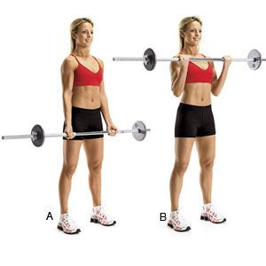
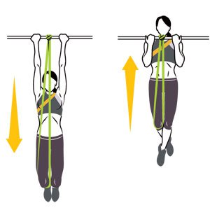

There are two parts of the arms to train, the bicep and the tricep. When you're training the biceps you need to make sure you're not 'swinging' to lift the bar. Training the triceps is tough work but very rewarding. Here are the best lifts to train both the bicep and the tricep.
Barbell curls - hold the bar with your palms facing away from your body with the grip just wider than shoulder width, pull the bar up towards your shoulders using your forearms.
Dumbbell curls - instead of using a barbell, you'll use dumbbells for this. Using the same lifting motion, pull the dumbbells up towards your shoulders.
Chin ups - using a pull up bar, have your palms facing towards you with your grip at shoulder width. Pull yourself up making sure your chin is just above the bar at the top of the exercise.
Tricep extensions - there are two ways to do this lift, the best way is to hold a dumbbell behind your head with both hands, lower the dumbbell as far as you can, then lift the dumbbell above your head.
Tricep pushdowns - this can only be done using a cable machine. Have your hands as close together as possible, push the bar down until your arms are straight, control the bar back up and repeat